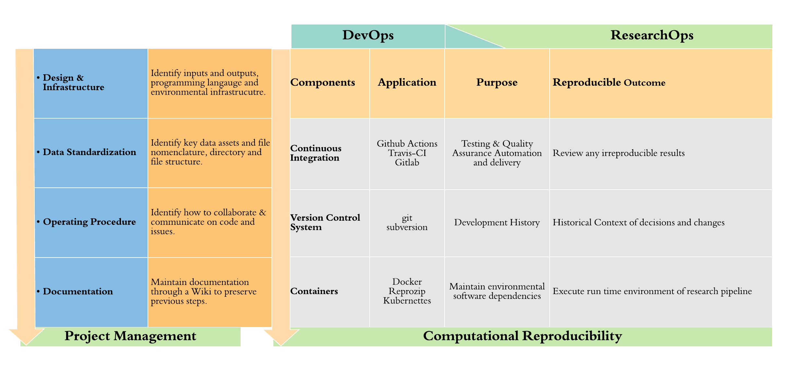
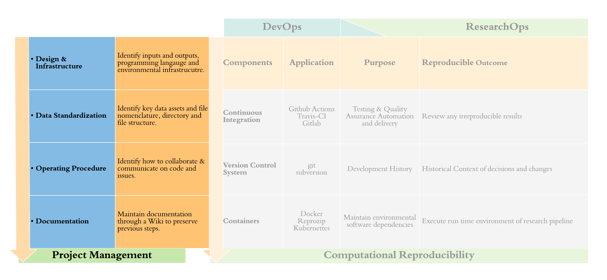
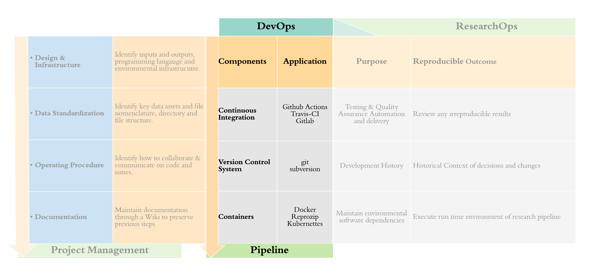
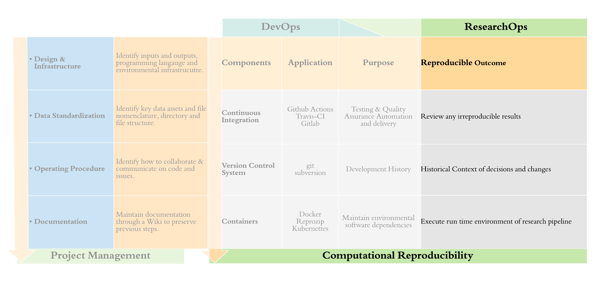

The ability to produce equivalent analytical outcomes from the same data set using the same code and software as the original study (Fidler et al., 2017).
| Challenge | Cause or mechanism | Examples | Consequences | Solutions | Source |
| Regularly Updated Data | Requires active data management, continual data entry, data processing and integration and error checking because data are continually changing. | long-term observational studies, experiments with repeated sampling, use of automatic sensors, ongoing literature mining, iterative near-term forecasting, adaptive management | Large burden on small teams without rapid and automated protocols. Data analysis prone to errors without QA/QC protocols. Reproducibility difficult to achieve without pipeline workflows. | version-control, automated testing, continuous integration and analysis | Yenni et al., (2019) |
| ‘Data ’freshness’ or the time between data collection and data use. | Data freshness is difficult to track due to variation in reporting practices. This difficulty is increased when many data sources are combined. Unknown data freshness or stale data may increase uncertainty and decrease accuracy in conclusions reached. | SDM’s where predictor variables do not capture recent environmental changes, such as rapid habitat loss, or where occurrence records do not coincide with period from which predictor variable captured | Poor model performance, reduced accuracy of predictions in areas of rapid environmental change, increased risk of negative outcomes of conservation decisions | Good metadata that includes temporal aspects of original data collection. | Murray et al., (2021) |
| Integrating and synthesising independently collected data from many sources | Ecological data often context specific, with many nuances and details in the study-system being poorly documented. Methods section limits are too small to capture full suite of details. | Complex modelling studies, conservation-decision-making studies, model transfers | Data are easily misinterpreted, biases unknown, and may pose statistical issues when integrating across multiple dimensions and sources. | use of FAIR data principles (FAIR: Findable, Accessible, Interoperable and Reusable), use of TRUST principles: Transparency, Responsibility, User focus, Sustainability and Technology, data archiving practices that adheres to these principles. | Culina et al., (2018) |
| Manual / hard-copy data entry | data collected on data sheets in the field or lab. Data structure not enforced by hand-recording, mistakes in data entry. | Hard-copy, free-hand field-data recording. Experimental protocols and results recorded by hand in lab-notebooks. | Errors in data entry may result in serious errors in conclusions, especially if systematic bias in recording errors. | Digital data recording with the use of schemas to enforce required data structure. Automated testing or QA/QC upon data entry. | Yenni et al., (2019) |
| Bio-logging and automated sensors | Ongoing QA/QC and data processing necessary, no standards for archiving data, most data are undiscoverable and inaccessible. | Camera traps, weather data, geo-location tracking, remote sensing or drone data, bio-logging data | Burden on researchers wanting to either share or reuse bio-logging data, datasets unable to be merged. | FAIR, TRUST principles, standardised templates and metadata, workflows for producing archive-quality data files/td> | (Sequeira et al., 2021) |
The Case for DevOps in Scientific Applications (de Bayser et al., 2015)



